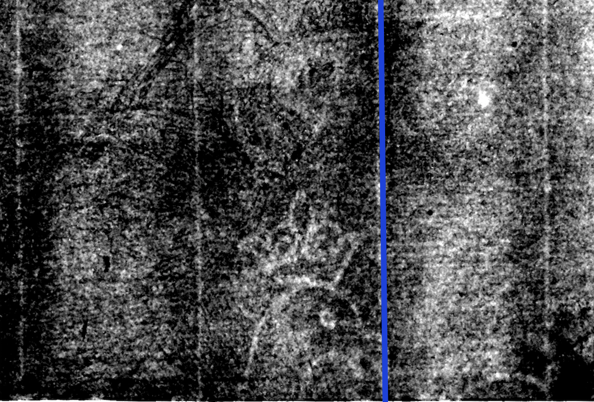

Your watermark is 2A-a
Watermark 2A-a has three notable characteristics, some of which are visible in this fragment image. There should not be a basel crosier at the center, the wings should point downwards, and a chainline touches, but does not intersect the beak (marked with blue).
